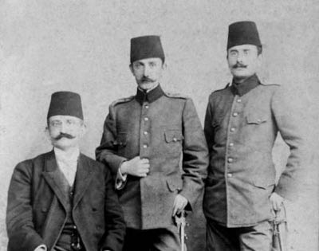
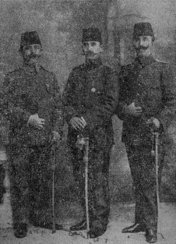

İki teşebbüs aklıma geldi: Biri imtihanlardan sonra tatilde (Ramazan’dan birkaç hafta evvel tatil başlardı) sılaya gitmek isteyen zabit ve talebenin isimlerini ve nereye gitmek istediklerini beş altı ay önce sordular. Yerlerinden de tahkikler yapılırmış. Ben Manastır’da bulunan kardeşim Hulusi Bey’in yanına gitmek istediğimi yazdım. Birkaç gün sonra Mektepler Müfettişi İsmail Paşa beni çağırdı. Yukardan aşağı süzerek dedi:
— Kâzım Bey! Sen Manastır’dan geleli daha yarım yıl olmadı? Ne kadar çabuk yine oraları özledin, kimlerle görüşmeye gideceksin?
— Manastır Mekteb-i Harbiyesi’ndeki kardeşimden başka özlediğim yok. Onun yanına gitmek istedim, dedim.
— Ya, o halde işin kolayı, kardeşini bu Harbiye’ye senin yanına getirmektir. Sen hiç zahmet edip yorulma. Yakında kardeşin de buraya gelir.
Bana, teşekkür ederek dışarı çıkmaktan başka yapacak bir şey kalmadı. Hakikaten de hemen yıldırım süratiyle birkaç gün içinde (21 Nisan [1908]-8 Nisan 1324) kardeşim İstanbul’a geldi. Pangaltı Harbiye Mektebi dahiliye zabitliğine tayin olunmuş. Bu suretle Harbiye Mektebi’nde ve dahiliyede üçüncü bir kuvvetli fedai zabiti daha yanımda yer aldı. Bu surete İstanbul’da cemiyetin bir aileden üç kişi azası da olduk.

Karabekir ailesinden: Hamdi, Hulusi, Kâzım
Bu tedbirim boşa çıkınca şu ikinci tedbire başvurdum: Müfettiş İsmail Paşa’nın iki çocuğu binbaşı rütbesiyle talebem idi. Ben kolağası idim. Mülazım rütbesinde dahi muallimler vardı!.. Bu iki kardeşten büyüğü Celal daha çalışkan ve daha zeki görünüyordu. Nöbetçi beyi olduğum bir gün onu yalnız yakaladım. Bütün talebe yemeğe gitmiş, o sınıfta ders çalışıyordu. Yanına gittim ve dedim:
— Ne kadar çalışkan ve zeki olsanız, iyi bir asker olmak için mutlaka İstanbul’dan uzakları dolaşmak mecburiyetindesiniz. Dağlar, nehirler, ormanlar görülmeden burada Çamlıca tepeleri, Kâğıthane sırtları ve dereleriyle anlaşılmaz. Bakın ordularda hizmet etmeyenlerle, benim gibi ordularda hizmet eden hocalarınız arasındaki farkın büyüklüğünü görüyorsunuz. Sizin çalışkanlığınızı ve zekânızı takdir ediyorum. Fakat nazariyat içinde boğularak kuvvetli bir asker olamayacağınıza da acıyorum. Celal cevap verdi:
— Teveccühünüze teşekkür ederim. Fakat ben ordu mıntıkalarını nasıl görebilirim?
— O pek kolay, dedim. Edirne ve Manastır’da Harbiye mektepleri var. Ben Manastır’da iken Topçu Emin Bey oradaki imtihanları teftişe gelmişti. Şu halde bu yıl İstanbul imtihanları daha önce bitebilir ve siz de kardeşinizle bu teftişe memur edilecek zatların yanında vazife alabilirsiniz.

İttihat ve Terakki Cemiyeti’nin ilk üyelerinden üç kardeş Ahmet Hamdi, İsmail Hakkı, Cafer
Tayyar (General)(Buraya, sevgili arkadaşlarımdan bizim gibi cemiyete mensup üç kardeşin de
takdir ve hürmetle fotoğraflarını koyuyorum.)
Eğer yanınızdaki müfettiş daha önce oraları görmüş hocalarınızdan biri olursa az zamanda çok şey öğretir. Mesela sizinle ben Manastır’a gitsek dönüşte sizi herkes, değil arkadaşlarından, hatta hocalarından bile üstün bulur. Fakat bunu babanıza kendi düşünceniz gibi söylerseniz hem gitmeye muvaffak oluruz, hem de zekânıza hayran olur.
Celal bu telkinimden çok sevindi ve hemen bu akşam temin edeceğini söyledi ve teşekkürler etti. (Babası Manastır’ı münasip bulmayarak beni Edirne mektebi imtihanlarını teftişe memur etmiş. Çocukları da beraberimde gidecekler.)